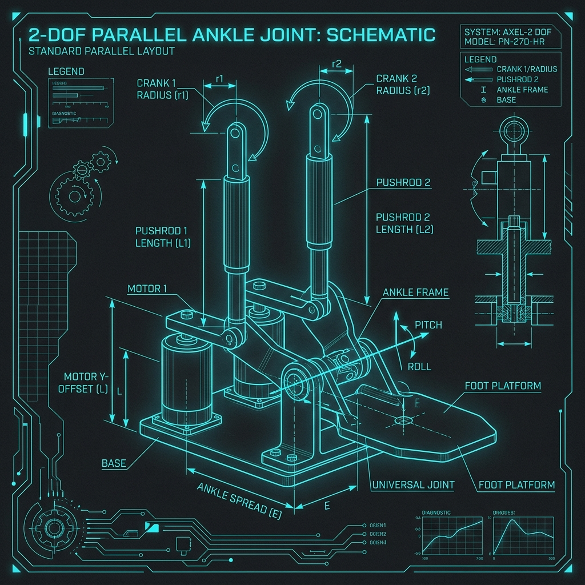
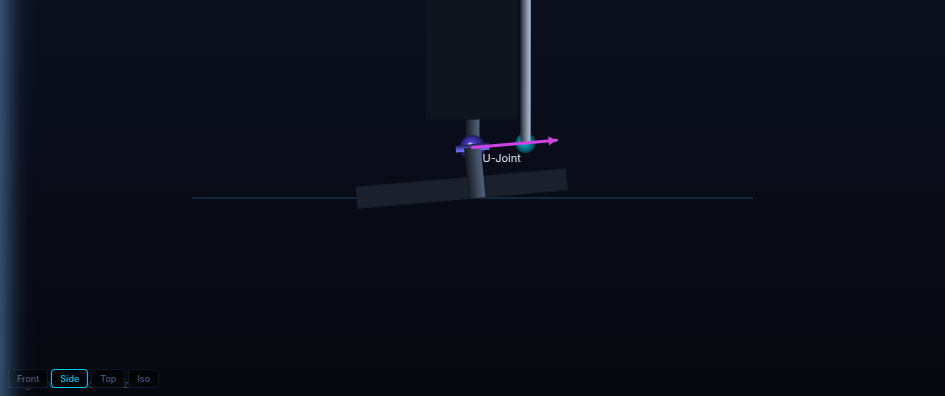
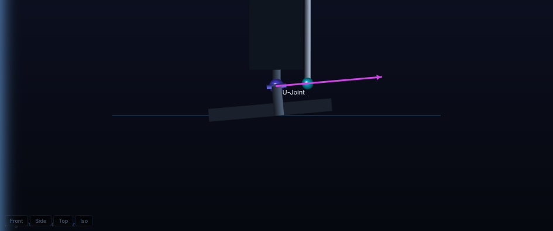

A systematic physics-based analysis of the 2-DOF humanoid ankle joint. Evaluates static standing balance, single-point contact tipping moments, and sole load distributions for a 42–45 kg humanoid. Establishes the optimal foot plate size and ankle mounting offsets for the Robstride RS03 actuator configuration.
The design of a humanoid robot's foot is the boundary between the robot and its environment. Placing the ankle joint (the universal joint pivot) relative to the foot plate, and sizing the foot plate itself, determines the static balance margins, required actuator torques, and dynamic stability limits of the entire robot.
This report provides a first-principles physics derivation of ankle joint efforts under a vertical load. We analyze the Angad humanoid robot, whose simulated base mass of 28.15 kg (pelvis, thighs, torso, etc.) will upscale to a physical weight of 42 to 45 kg once batteries, onboard compute, sensors, CNC link brackets, and upscaled Robstride RS03 actuators are integrated.
To design the foot and mount the ankle, we must understand how humanoids remain upright. We define the following physical quantities:
When the foot plate flatly touches the ground (neutral standing), the vertical load of the robot is distributed across the entire sole. The ground reaction force acts vertically upward. If the ankle joint is offset from the center of the foot, or if the robot sways, the ankle joint must apply a torque to shift the CoP. The ankle torque τ directly controls the location of the CoP:
τ = −FN · (xCoP − xankle)
If the ankle joint is centered (xankle = 0) and the CoM is directly overhead (xCoP = 0), the required ankle torque is exactly 0 N·m. The vertical load passes straight through the joint into the ground.
When the robot walks, it tilts the foot plate. During a heel-strike (θ > 0) or toe push-off (θ < 0), the foot sole is no longer flat. The sole makes contact with the ground only at a single line (the heel edge or the toe edge).
In this regime, the support point is locked at the edge (xcontact = ±Lfoot/2). To support the robot's vertical mass without the foot collapsing or the leg tipping, the ankle joint must actively output a torque that balances the gravity moment arm created between the ankle joint and the contact edge. This represents the worst-case joint load.
Determining the optimal width and length of the foot plate is a trade-off. We must balance five competing engineering parameters:
The table below compares three potential foot sizes for the Angad humanoid under a 42 kg assembly load, evaluating the trade-offs between stability, torque, and mass. It also benchmarks Angad against industry standard humanoids:
| Humanoid Model | Standing Height | Total Mass | Foot Size | Foot Length to Height Ratio | Assessment & Performance Verdict |
|---|---|---|---|---|---|
| Honda ASIMO | 130 cm | 54 kg | 22 cm × 12 cm | 16.9% | Large support envelope. Provides massive passive stability, but adds heavy swing leg inertia. |
| KAIST HUBO | 150 cm | 55 kg | 24 cm × 13 cm | 16.0% | Standard footprint ratio. Excellent for walking on flat terrain, but high risk of foot collision. |
| Angad (Proposed Foot) Default Size |
140 cm | 42 kg | 15 cm × 8 cm | 10.7% | Compact Ratio: Minimizes swing inertia (0.365 kg) and eliminates scuffing. Relies on active ankle control. |
| Angad (Compact Option) | 140 cm | 42 kg | 13 cm × 7 cm | 9.3% | Too narrow: Trajectory CoM drifts outside boundaries. High risk of passive tipping. |
| Angad (Large Option) | 140 cm | 42 kg | 18 cm × 9 cm | 12.8% | Suboptimal: Increases required pitch torque to 41.2 N·m. Adds excessive swing weight. |
When the foot is tilted by pitch angle θ and is in single-point contact with the ground at xc (where xc = −Lfoot/2 for heel contact and xc = +Lfoot/2 for toe contact), we calculate the required universal joint torque to support the vertical weight.
Let the universal joint coordinate in the foot frame be (xankle, zuj), where xankle is the offset from the foot sole center and zuj is the vertical height of the universal joint (3.6 cm). When the foot tilts by θ around the pitch axis (Y-axis), the horizontal distance (moment arm) in the world frame between the contact point and the universal joint is derived via coordinate rotation:
Where M is the robot mass (kg), g = 9.81 m/s², and τankle is the ankle joint torque (N·m) required for static equilibrium.
The tables below show the required ankle joint pitch torque (N·m) at discrete foot pitch angles for various ankle offset positions (xankle from −5 cm closer to heel, to +5 cm closer to toe) on the 15 cm foot plate:
| Pitch Angle | Offset −5 cm (Heel-close) | Offset −3 cm | Offset −1.5 cm (Optimum) | Offset 0 cm (Centered) | Offset +3 cm | Offset +5 cm (Toe-close) |
|---|
| Pitch Angle | Offset −5 cm (Heel-close) | Offset −3 cm | Offset −1.5 cm (Optimum) | Offset 0 cm (Centered) | Offset +3 cm | Offset +5 cm (Toe-close) |
|---|
Robotic humanoids do not drive the ankle pivot directly. For the Angad leg, the ankle is driven by the parallel 2-RSS linkage. This mechanism converts the required ankle joint pitch torque (τankle) into individual motor torques (τmotor1, τmotor2) through the transpose of the velocity Jacobian:
[ τankle, pitch ; τankle, roll ] = JT · [ τmotor1 ; τmotor2 ]
When balancing or pitching forward/backward, roll torque is zero (τankle, roll = 0). Solving this system shows that:
τmotor1 ≈ τmotor2 ≈ τankle, pitch / (2 · η)
Where η is the transmission ratio (mechanical leverage) of the linkage. For our orthogonal layout, η ≈ 1.5 near neutral.

To verify these calculations in a dynamic walking environment, we analyzed the mass properties and walk telemetry of the humanoid robot using the files in the MuJoCo workspace:
Extracting the walk telemetry from perfect_walk_telemetry.npz reveals that during the stance phase, the projection of the robot's CoM along the foot length (world Y-direction) travels from −8.66 cm to +6.22 cm relative to the foot center.
This trajectory is naturally offset backward due to the leg kinematics and torso posture during forward walk. The centroid of this dynamic envelope is:
Centergait = (−8.66 cm + 6.22 cm) / 2 = −1.22 cm
By mounting the ankle joint with a posterior (backward) offset of −1.5 cm, we align the joint with the middle of the dynamic sweep. This keeps the CoM trajectory perfectly centered in the foot's support polygon, maximizing both forward and backward safety margins.


This checklist serves as a guide for hardware engineers during the CAD drafting and structural assembly of the foot plate and ankle pivot connection: